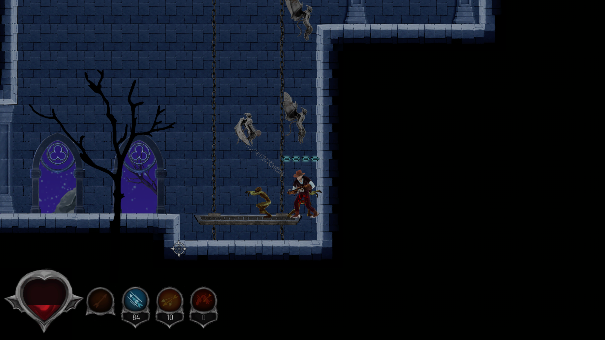
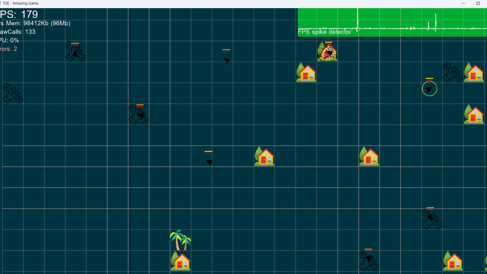

Team Project • Lamp Engine
Spite - Ashes of Ephtael
A Diablo-inspired action RPG developed in a team using our in-house engine. My work focused on enemy AI, behaviour systems, and integrating gameplay with animation and input.



Gameplay / AI Programmer
Team Project
Enemy AI, State Machines, Combat Behaviour
Lamp Engine (Custom)
What I Worked On
My main contribution was enemy behaviour and AI systems. I designed and implemented a ranged enemy archetype using a state machine, integrated animation with gameplay logic, and contributed to camera and input systems.
Enemy AI & State Machine
Enemy behaviour was structured using a state machine with clear transitions between idle, chase and attack states. This made behaviour predictable, extendable and easier to debug.

Ranged Enemy Behaviour
I created a ranged enemy that attacks using projectiles. The goal was to create pressure at a distance while maintaining readable attack patterns.

Animation Integration
I integrated animation with gameplay logic to ensure that attacks and movement matched the enemy behaviour states. This improved readability and feedback during combat.

Camera & Input Systems
I contributed to CameraManager and InputManager to ensure responsive controls and stable camera behaviour during gameplay.

Technical Takeaways
This project gave me hands-on experience building gameplay systems inside a custom engine and working with AI, animation, and input together.
It highlighted how important timing and readability are in combat-heavy games, and how even small changes in behaviour logic can significantly affect the player experience.